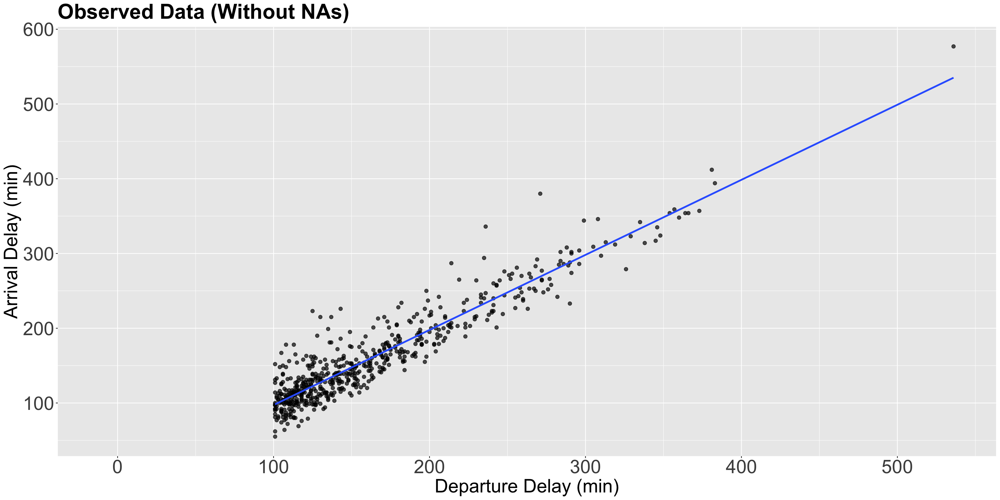
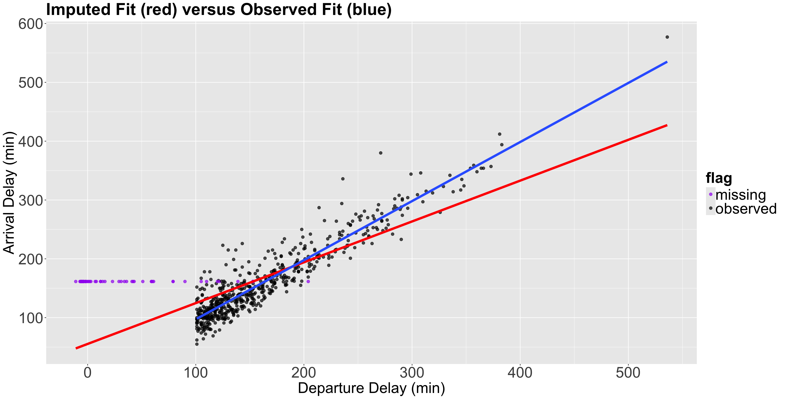
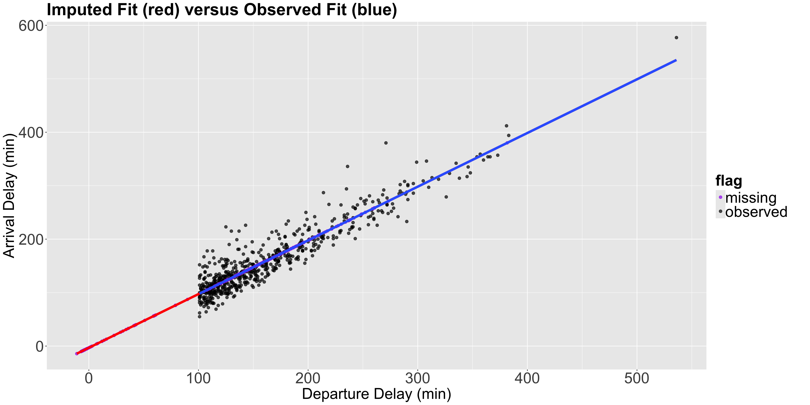
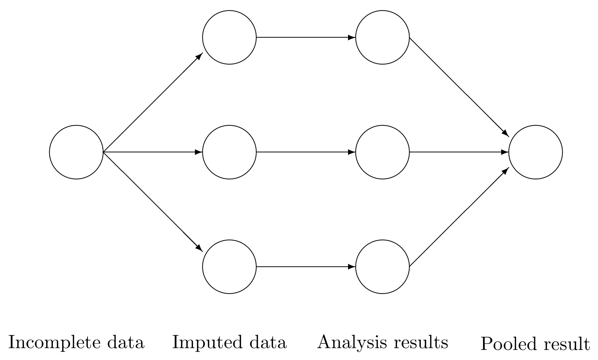
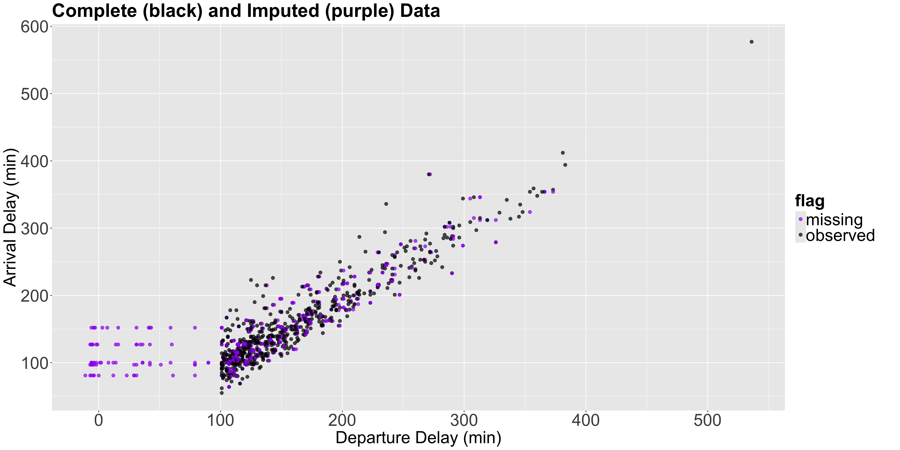

Lecture 8
Missing Data
(Please, sign in on iClicker)
Today’s Learning Goals
By the end of this lecture, you should be able to:
- Identify and explain the three common types of missing data mechanisms.
- Identify a potential consequence of removing missing data on downstream analyses.
- Identify a potential consequence of a mean imputation method on downstream analyses.
- Identify the four steps involved with a multiple imputation method for handling missing data.
- Use the
{mice}package inRto fit multiple imputed models.
Outline
- Types of Missing Data
- Handling Missing Data
1. Types of Missing Data
- In Statistics, there are three types of missing data:
- Missing completely at random (MCAR).
- Missing at random (MAR).
- Missing not at random (MNAR).
- Proper identification will determine the class of approach we will take to deal with missingness in any statistical analysis.
1.1. Missing Completely At Random (MCAR)
- In this type, missing data appear totally by chance.
- Hence, missingness is independent of the data.
- Roughly speaking, all our observations (rows in the dataset) have the same chance of containing missing data (i.e., an
NAin one of the columns).
Heads-up: It is the ideal class of missing data since there is no missingness pattern.
Example
- We are trying to count the number of car accidents in Vancouver. To do that, we are monitoring the traffic in 100 strategic points of the city with cameras.
- Say that we count how many vehicles passed by each one of those cameras for every minute of the day. We have 101 variables:
time,Camera_1, …,Camera_100. - Suppose that any camera has a \(1\%\) chance of failing for any given minute. If a camera fails, you get MCAR data for that minute.
1.2. Missing At Random (MAR)
- In this type, missingness depends on the observed data we have.
- Therefore, we could use some imputation techniques for this missingness, such as multiple imputation (to be covered later on today), based on the rest of our available data (a hot deck imputation technique).

Example
- Following up with the previous example, an external device is attached to the cameras to increase the image quality at low light situations (night time) and we have the recording time in our dataset.
- The external device is activated from 6 p.m. to 5 a.m. However, the device has a \(10\%\) chance of not working in any given minute.
- The chances are not the same for all the observations but depend on the data we observed, more specifically, night
time.
1.3. Missing Not At Random (MNAR)
- This is the most serious type of missingness since the MNAR data depends on unobservable quantities.
Example
With the previous example, if we did not record time, we would be MNAR data since we do not have any other information rather than just the car count.
Another missingness cause of this type would be that, as the cameras get older, their probability of failure increases, but we cannot check this from our observed data.
2. Handling Missing Data
- We will explore different techniques to impute missing data based on the type of missingness.
- Listwise deletion.
- Mean imputation.
- Regression imputation.
- Last observation carried over.
- Multiple imputation.
2.1. Listwise Deletion
- It is the simplest way to deal with missing data.
- Is there any missing data in your row? If yes, we just remove the row.
- If the data is MCAR, we are not introducing bias by removing the rows.
- We can still get unbiased estimators for whichever our analysis is, such as regression coefficients.
- We can also estimate the standard errors correctly, but they will be higher than they could be since we discard incomplete observations.
iClicker Question
Are these higher standard errors related to the MCAR nature of the deleted rows?
A. Yes.
B. No.
Today’s Dataset
- Let us start with our lecture’s toy dataset: the
flightsdataset from the package{nycflights13}. - It contains the on-time data of 336,776 flights that departed New York City in 2013.
- We will use the following columns:
dep_delay: departure delays in minutes.arr_delay: arrival delays in minutes.carrier: two-letter carrier abbreviation.
Descriptive statistics!
- We will try getting the mean
dep_delaypercarrier,but we have missing data indep_delay, which will return a summary withNAs.
How to handle NA’s?
- Assuming data is MCAR, if we want to make a listwise deletion to get the means by
carrier, we just usena.rm = TRUEinmean().
Nonetheless…
- We have to be careful. If the missing data in
flightsis not MCAR, we can introduce serious bias in our estimates (means in this case) for some given statistical approach. - But, why a bias?
Another Example
- Suppose that people with low income have a higher chance of omitting their income (as a numeric variable) in a given survey used for regression analysis.
- Then, if we just drop those rows, we are skewing our analysis towards people with higher income without knowing. So, there will be a bias in our results in our regression estimates.
iClicker Question
- Let us retake the previous survey example regarding low-income respondents. Suppose this survey collects additional information, such as the respondent’s specific neighbourhood, which is a complete column.
- Then, you could match this extra information with some other neighbourhood databases identifying low, middle, and high-income areas.
- What class of missing data are these missing incomes in the survey?
A. MCAR.
B. MAR.
C. MNAR.
2.2. Mean Imputation
- The title is very suggestive.
- Let us just use the mean of our variable of interest to impute the missing data.
Heads-up: This imputation technique can only be used with continuous and count-type variables!
- Re-taking the
flightsdataset, for the exercise’s sake (not to be generalized to other data cases), we will filter those observations withNAs inarr_delayORdep_delayvalues larger than 100 minutes. - Then, we will only sample 1000 flights.
Sampling!
Plot!

Heads-up!
- Note the condition
dep_delay > 100is also depicted in the plot. - The blue line is just the estimated Ordinary Least-squares (OLS) linear regression of
dep_delayversusarr_delaywith 593 complete observations.
- Nonetheless, since the conditional is
is.na(arr_delay) | dep_delay > 100(i.e., OR), we would eventually have an imputed subset of observations with negativedep_delay, i.e., flights on time but missingarr_delay.
Note the pattern!
- This missigness pattern will provide a particular behaviour in our subsequent mean imputations.
Moving along!
- It is necessary to perform an exploratory data analysis (EDA) on our data missingness.
- We can use the function
md.pattern()from the packagemiceto display missing data patterns.
Therefore…
- We have 593 observations with non-missing data in both
dep_delayandarr_delay, 53 witharr_delaymissing, and 354 with bothdep_delayandarr_delaymissing.
- The
md.pattern()summary shows that our sample does NOT contain observations wheredep_delayis missing andarr_delayis present. - Now, we will impute the overall means of
dep_delayandarr_delay.
Impute in R!
Now, using mice() from the mice package!
Sanity check!
Plotting the imputed values!
- We will now plot the imputed values as purple points, and another estimated OLS linear regression in red with the \(n = 1000\) sampled observations (non-imputed AND imputed).
- Note the horizontal pattern in the imputed purple points, which is the subset of observations with the particular behaviour we previously mentioned.
Plot!

Also…
- Notice that by imputing the mean, we are artificially reducing the standard deviation of our data which is a drawback of mean imputation.
And…
2.3. Regression Imputation
- From the black points (complete observations) in the previous plot, we can notice a clear positive relation between
arr_delaychanges withdep_delay. - Hence, why not using the estimated OLS linear regression in blue (fitted with those complete 593 observations) to estimate those missing values?
- We can do it automatically via
mice()usingmethod = "norm.predict".
Code in R!
Plot!

Note the following…
- All the purple points (imputed values) are on the imputed fit (red) line, which is now just an extension of the observed fit (blue) line.
- Since the method imputes all the points perfectly in the regression line, we will reinforce the data’s relationships. For example, let us calculate the correlation of the imputed data vs the observed data.
Correlations
Correlations (Cont’d)
2.4. Last Observation Carried Over
- Another method that we might see out there is imputing data by repeating the previous observation.
- This is more frequent when dealing with temporal data, and will be out of the scope of this course.
2.5. Multiple Imputation
- Having explored mean and regression imputations, let us proceed to a simulation-based method called multiple imputation.
- We have seen that using a single value for the imputation causes problems, such as reducing our dataset variance. Then, a handy approach is the multiple imputation method.
- The idea here is, instead of imputing one value for missing data, we impute multiple values. But how can we do it?
- We can do it via the
mice()function, which offers this multiple imputation method. MICE stands for Multiple Imputation by Chained Equations.
Multiple Imputation in R!
- Roughly speaking, for a data frame
data, the four automatic steps in thisRfunction are the following:
- Create
mcopies of this dataset:data_1,data_2,…,data_m. - In each copy, impute the missing data with different values (the observed values will remain the same).
- Carry out the analysis for each dataset separately. For example, fit an OLS linear regression model for each one of the datasets
data_1,data_2,…,data_mwhen you have a continuous variable to impute. - Combine the separate models into one final pooled model.
Workflow
- We would use our pooled model, fitted with our response of interest subject to our regressor set, to answer our inferential or predictive inquiries. The below diagram provides a clearer perspective

Source: van Buuren (2012).
Question!
- Now, how do we impute the missing data in step 2?
- By default,
mice()implements the predictive mean matching (PMM) found in Rubin (1987) on page 166. - With two columns \(X\) and \(Y\) (where \(X\) is complete and \(Y\) has some rows with
NAs), we follow an univariate Bayesian method.
The Univariate Bayesian Method
- Estimate the OLS linear regression parameters \(\hat{\beta}_0\), \(\hat{\beta}_1\), and \(\hat{\sigma^2}\) of the column where the missing values to impute are located (as the response, i.e., \(Y\)) versus the other complete column (as the regressor, \(X\)), using the observed complete rows only (i.e., where \(X\) and \(Y\) are both present).
- Draw \(\beta_0^*\), \(\beta_1^*\), and \(\sigma^{2^*}\) using proper posterior distributions where the inputs are \(\hat{\beta}_0\), \(\hat{\beta}_1\), and \(\hat{\sigma^2}\).
- Compute the fitted values \(\hat{y}_i^*\) for the column \(Y\) in step (1): we use \(\beta_0^*\) and \(\beta_1^*\) for both non-missing and missing rows.
Cont’d
- For each fitted value \(\hat{y}_i^*\) corresponding to those missing rows in \(Y\), we find a given number of donors (5 by default in
mice()) from all the \(\hat{y}_i^*\) (corresponding to those non-missing rows in \(Y\)) which are the closest ones to each missing case. - We randomly select one of these donors (using its real observed value in \(Y\)!) to impute the corresponding missing value.
- The process is repeated
mtimes.
Note that this algorithm also has a multivariate version where
NAs can be present in more than one column.
Implementation
- Let us implement this univariate process with
sampled_flightswithm = 20.
Code in R!
- We can check the imputed values for a specific column (e.g.,
arr_delay) in these 20 datasets as follows:
Note the following…
- Each row corresponds to a missing observation in your original dataset.
- The columns are the
mimputed datasets that were created. - We can get each one of the
mimputed datasets withcomplete().
Code in R!
We can plot the imputed dataset number 3 as follows:
Plot!

Estimation
- Now, let us estimate an OLS linear regression for each one of the 20 imputed datasets in
sampled_flights_imputed_PMM.
Then…
- We can access to each model separately as follows:
Finally…
- Let us combine the models altogether in a single pooled model.
Overview
- The
estimatecolumn is just the averages of allmmodels. Full details about the computation on these columns are provided by Rubin (1987) on pages 76 and 77. - The columns are explained as follows:
estimate: the average of the regression coefficients acrossmmodels.ubar: the average variance (i.e., averageSE^2) acrossmmodels.b: the sample variance of themregression coefficients.t: a final estimate of theSE^2 of each regression coefficient.- =
ubar + (1 + 1/m) * b
- =
Overview (Cont’d)
dfcom: the degrees of freedom associated with the final regression coefficient estimates.- An
alpha-level confidence interval:estimate +/- qt(alpha/2, df) * sqrt(t).
- An
riv: the relative increase in variance due to randomness.- =
t/ubar - 1
- =
lambda: the proportion of total variance due to missingness.fmi: the fraction of missing information.
Where are the usual outputs (std.error, p.value,…)?
Obtain summary
We can call summary() on the pooled model to obtain them.
3. Wrapping Up
Data imputation involves some wrangling effort and proper missingness visualizations.
We have to be careful when defining our class of data missingness since this will determine the type of data imputation we need to make (or maybe data deletion!).
In general, multiple imputation will work OK for MAR and MNAR data.
We only saw continuous imputation in this example. Nonetheless, the
mice()approach can be extended to other data types such as binary or categorical. In those cases, we have to switch to generalized linear models (GLMs), even with a Bayesian approach.

DSCI 562 - Regression II